Technical Help , Queries & Support
For any assistance related to this module, customization or Odoo development.
Dynamic Split View enhances List and Kanban views by displaying the selected record in a Form panel alongside the current view. Administrators can configure supported view types, Split View direction, default behavior and new-record handling from Odoo Settings.
Configure Dynamic Split View from Odoo Settings and control which views support Split View, how the panels are arranged, and how records open within the Split View layout.
Configuration Flow: General Settings → Enable Split View → Select View Types → Choose Split Direction → Configure Default and New Record Options
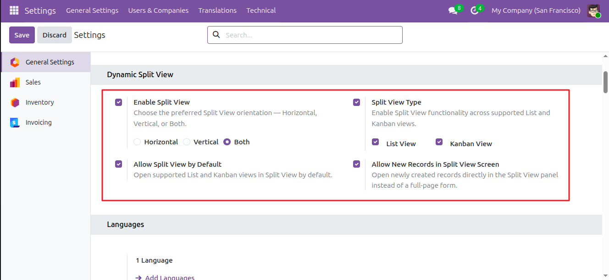
Turns on Dynamic Split View and makes the feature available for the configured List and Kanban views.
Displays separate List View and Kanban View options, allowing Split View to be enabled independently for each view type.
Defines the Split View layout using Horizontal, Vertical, or Both directions.
Starts supported views with Split View already active, so users do not need to enable the Split View icon manually.
Opens newly created records directly in the Split Form panel, keeping the user on the current List or Kanban view.
List View Split allows users to open a selected record directly in the Form panel while keeping the List View visible.
List View Flow: Open List View → Enable Split View from the Split View Icon → Select a Record → Open Record in Form Panel
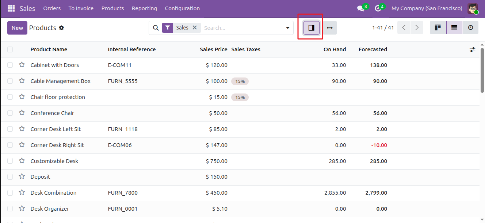
Normal List View
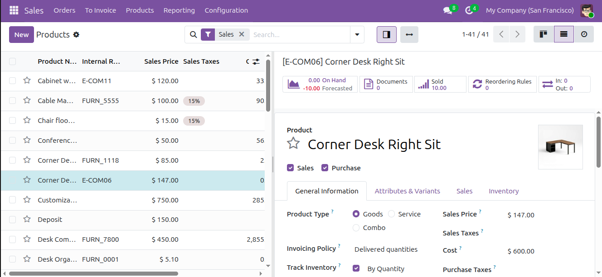
List View with Split View Enabled
Note: Enable Split View using the icon. If Allow Split View by Default is enabled, it is activated automatically.
When Kanban View Split is enabled from Settings, users can select a Kanban record and view its Form directly in the Split View panel without leaving the current Kanban workflow.
Kanban Flow: Enable Kanban View → Enable Split View from the Split View Icon → Select a Kanban Record → Open Record in Form Panel
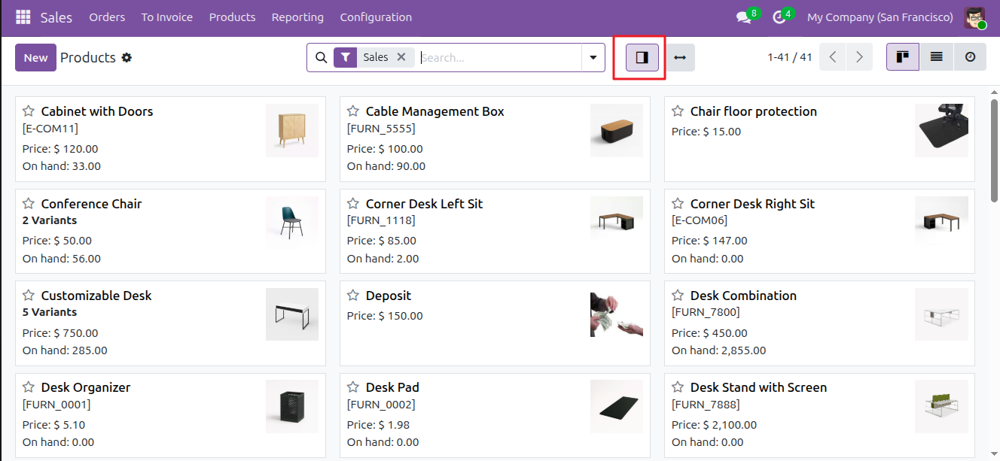
Normal Kanban View
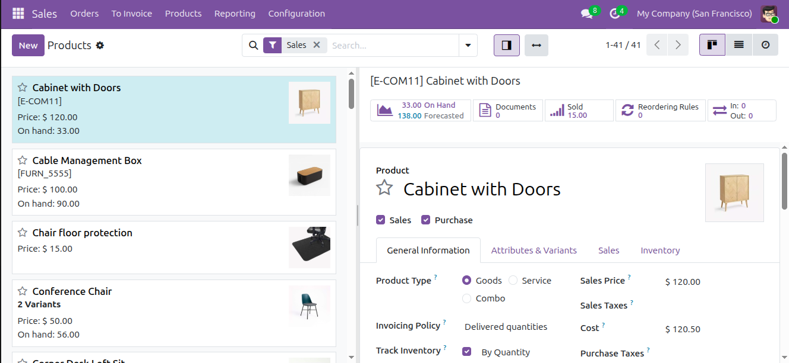
Kanban View with Split View
The selected Kanban record is loaded into the Form panel while the Kanban cards remain visible.
Existing Kanban search, filters, grouping and pagination workflows remain available while working with the Form panel.
Split View supports Horizontal, Vertical and Both orientation modes. The selected direction determines how the main List or Kanban area and the Form panel are arranged.
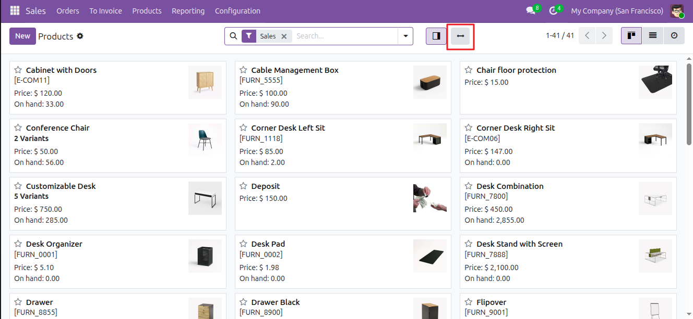
Horizontal Direction
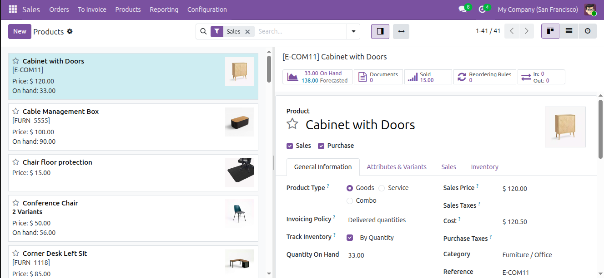
Horizontal Split View
Horizontal mode displays the main List or Kanban view and the Form panel side by side.
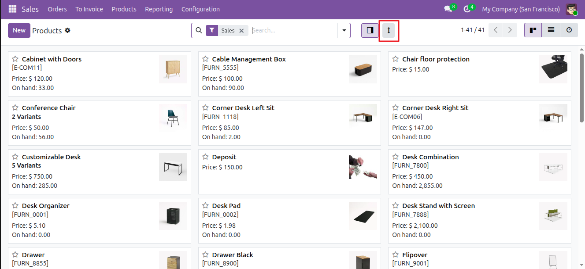
Vertical Direction
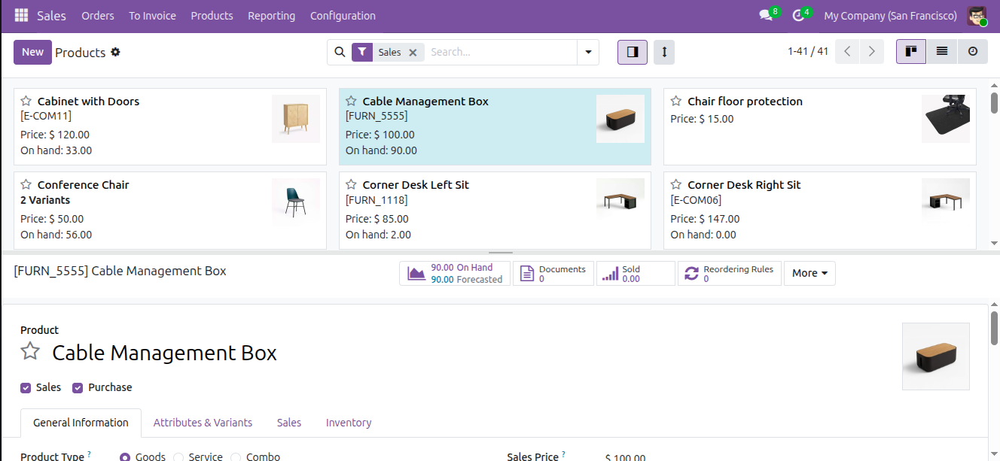
Vertical Split View
Vertical mode displays the main List or Kanban view and the Form panel one above the other.
Direction Behavior: Horizontal keeps the Form panel beside the main view, Vertical places the Form panel above or below the main view, and Both allows users to switch between Horizontal and Vertical layouts.
The Split View divider can be dragged to adjust the space allocated to the main List or Kanban area and the Form panel. The resize behavior works for both Horizontal and Vertical orientations.
Resize Flow: Open Split View → Drag the Divider → Adjust Panel Size → Release the Divider
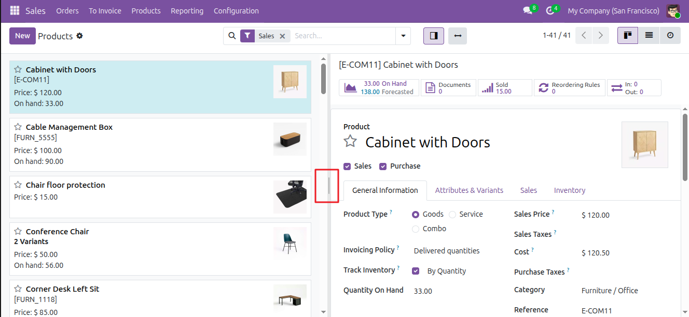
Normal Split View
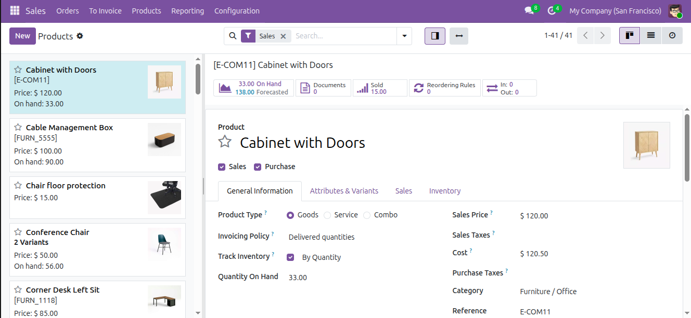
Resized Split View
Double-clicking the divider restores the default split size. The panel size can be retained through browser-side Split View state.
The New Record in Split View option allows supported List and Kanban views to create a new record directly inside the Form panel instead of navigating away from the current view.
New Record Flow: Enable New Record in Split View → Click New → Open New Form in Split Panel
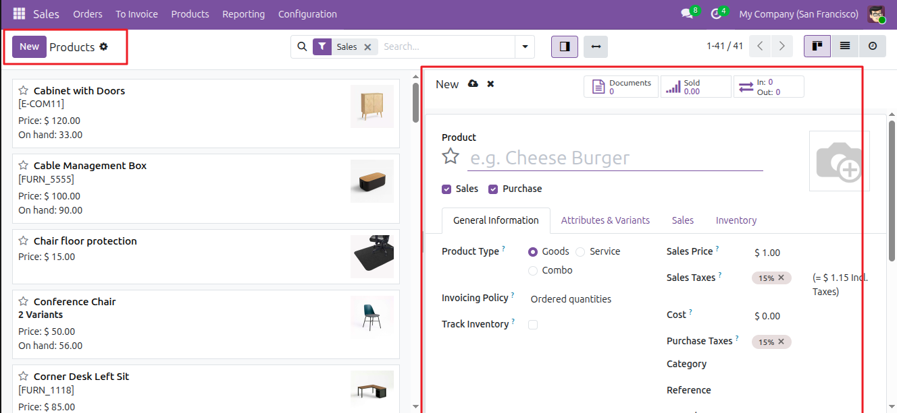
When the New Record in Split View option is enabled and Split View is active, clicking the New button opens the new record directly in the Split Form panel. The user can continue working with the current List or Kanban view.
View Synchronization keeps the main List or Kanban view and the Form panel synchronized while working with records in Split View. Record operations performed from the Form panel can refresh the related main view while keeping the Split View workflow active.
Synchronization Flow: Open Record → Work in Form Panel → Perform Record Operation → Refresh Related Main View
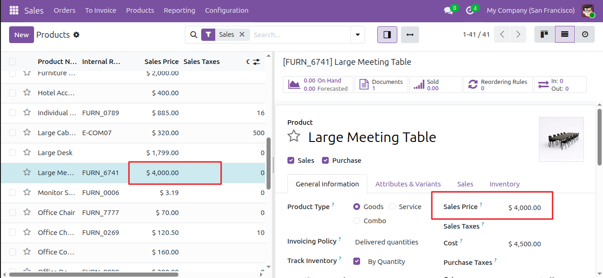
Normal View
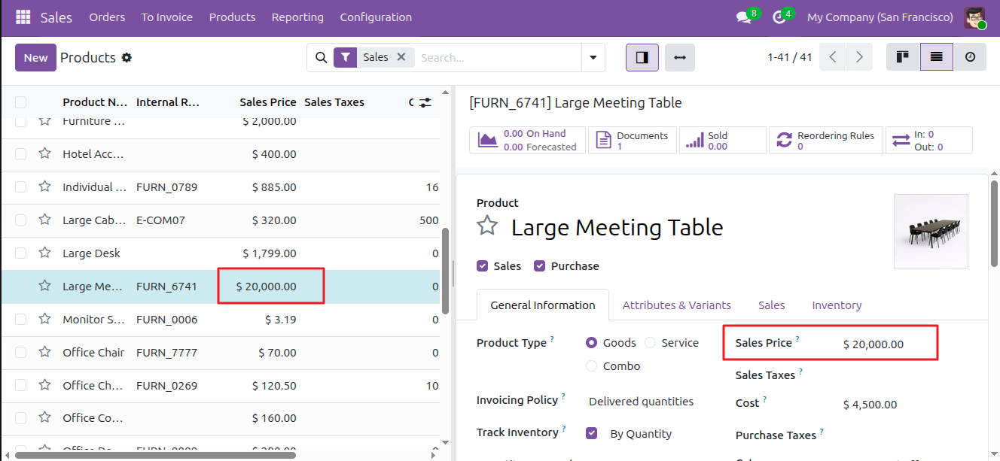
Synchronized View
For any assistance related to this module, customization or Odoo development.